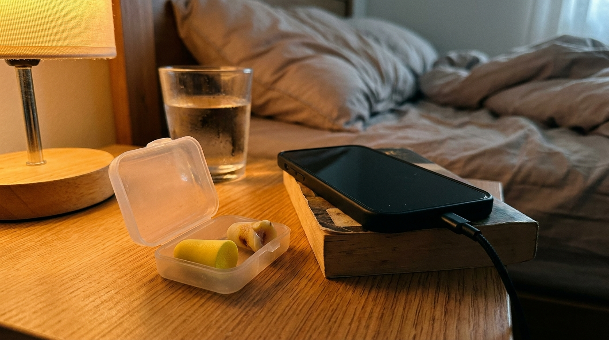
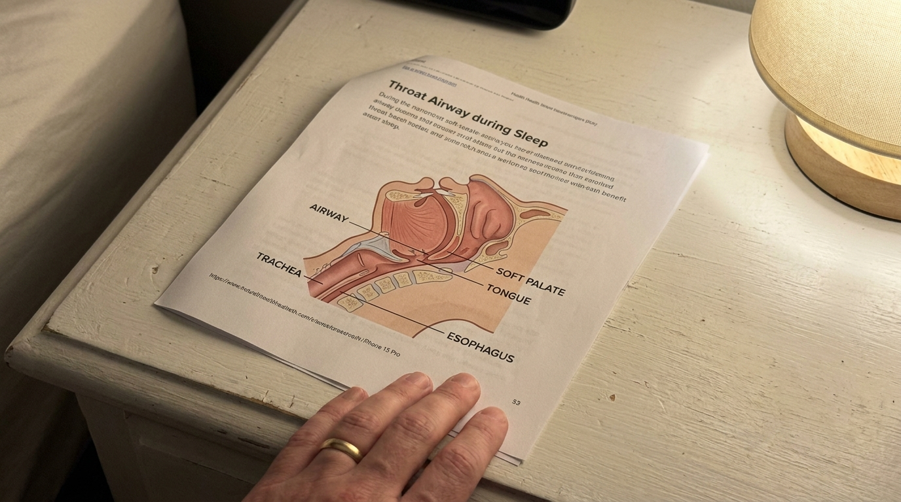
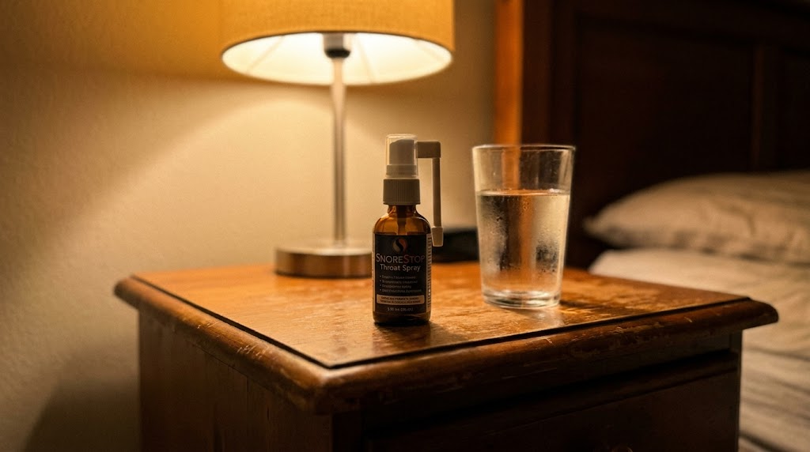
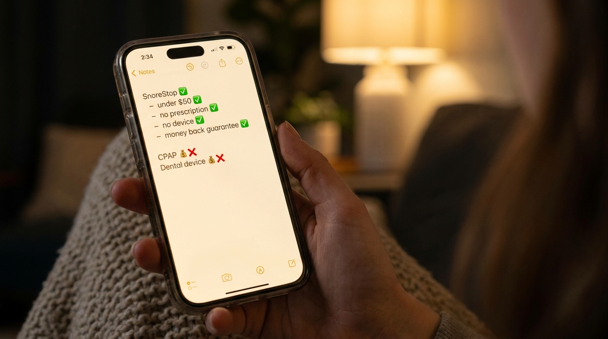
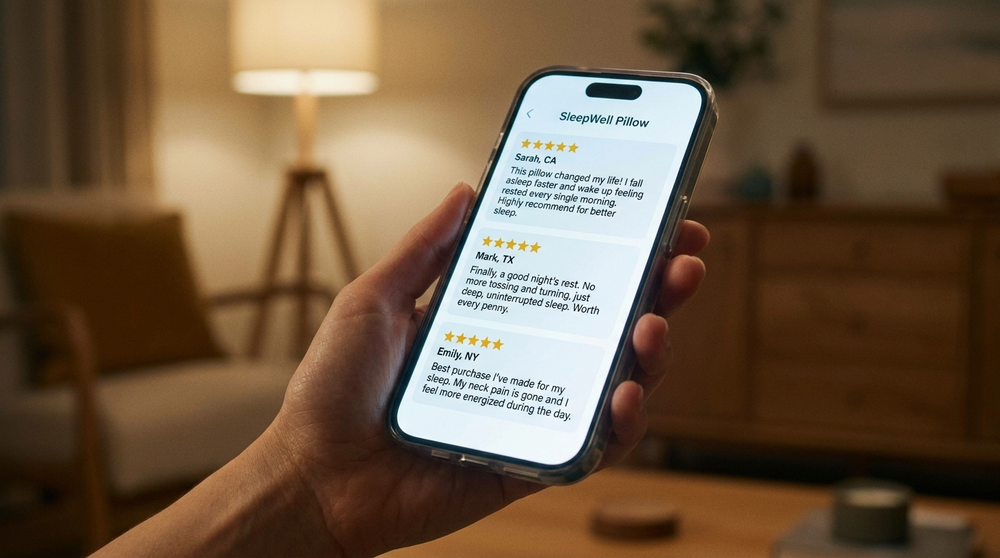

I Thought My Wife Was Exaggerating My Snoring For Years. Then She Played Me The Recording. (Here's What I Did)
I woke up and her side of the bed was empty again.
I knew where she was. Same place she'd been going in the middle of the night for the past two years when my snoring got bad enough that she couldn't take it anymore. Couch, spare room, sometimes just sitting in the kitchen until it was late enough to call it morning. I'd stopped asking about it because she'd stopped bringing it up and we'd both silently agreed to let it become part of how we lived.
I lay there looking at the indent her head had left in the pillow and something about that morning felt different. I don't know why that morning specifically. Maybe I'd been counting without realizing it. Maybe two years is just the number where something finally lands.
I found her phone on her nightstand by accident, looking for mine. She'd recorded me the night before. I pressed play standing alone in the bedroom and I listened to myself for about forty seconds before I had to stop.
I want to be honest about what came after that, because I think a lot of men are living inside the same comfortable story I had built for myself, and I was inside that story for nine years before a forty second recording ended it. What I found after that morning was so simple it made me genuinely angry at myself. I wrote it all down below because I think you need to know it exists.
It started as something we laughed about
Early in our marriage the snoring was a joke. She'd nudge me, I'd roll over, she'd fall back asleep. We'd mention it in the morning the way couples mention small harmless things. I snore a little, she's a light sleeper, these are just facts about us, not problems.
Somewhere in the middle of year three it stopped being funny and neither of us made a formal announcement about that. It just quietly changed. She stopped nudging me because nudging me stopped working. I'd roll over and start again within minutes. She started going to bed later so she'd be asleep before I got there. Then the earplugs. Then the white noise machine. Then, eventually, the couch.
I told myself she was sensitive. I told myself everyone's partner snores and everyone figures out a way to deal with it. I told myself it wasn't that bad.
I had never once heard myself sleep.

Nine years of fine
She never made it a fight. That's the thing I keep coming back to. She never sat me down and told me how bad it had gotten because I think she'd decided somewhere along the way that it wasn't going to change and fighting about something that wasn't going to change was just adding a second problem to the first one.
So she said fine. Every morning, fine. I'd ask how she slept and she'd say fine and I'd accept it because it was easier than the alternative.
What I didn't know, what I had completely failed to understand in nine years of sleeping next to her, is what fine actually meant. Fine meant she was running on four and five hour nights and had been for longer than I knew. Fine meant she'd stopped mentioning it to friends because she was tired of the conversation going nowhere. Fine meant she had quietly rebuilt her entire relationship with sleep around one problem that wasn't hers to have and that I had decided wasn't serious enough to do anything about.
I had done that to her. That's the sentence I sat with on the morning of the recording.
"She never made it a fight. She just quietly rebuilt her entire life around a problem that wasn't hers to have."
The part I've never said out loud
I listened to that recording three times.
The first time I didn't believe it was me. I genuinely sat there wondering if the phone had picked up something else, a TV in another room, something. The second time I accepted it was me and felt a specific kind of shame I hadn't felt since I was a teenager. The third time I listened to it I started thinking about every single morning she had said fine and what that word had actually cost her to say.
Nine years. Thousands of nights. Thousands of fines.
I sat on the edge of our bed in the quiet of a morning she had left somewhere in the night and I thought about what kind of person lets something go on for nine years because it's uncomfortable to fix. I didn't have a good answer.
What I did in the next 48 hours
I didn't tell her I'd heard the recording. Not right away.
I went looking first because I wanted to come to her with something real, not just another version of I'll try to do something about it. She'd heard that before and it had meant nothing and I wasn't going to say it again without being able to back it up.
I started reading about what snoring actually is, not the jokes-at-breakfast version but the actual mechanism of what happens in a throat during sleep that produces that sound. I hadn't done this before. In nine years I had never once sat down and tried to understand the thing that was doing this to her because I'd never taken it seriously enough to look.
What I found when I started reading scared me more than I expected. The snoring wasn't just a noise. It was a sign of something happening in the airway during sleep, soft tissue at the back of the throat relaxing and partially blocking airflow, creating vibration, creating the sound she'd been lying next to every night while I slept through it completely unbothered. And when it gets bad enough, when the airway closes enough, the breathing stops.
I kept reading.
What I found
I went in expecting complicated. Sleep studies, machines, dental devices, surgery. I had resigned myself to whatever the answer was going to cost because that's what nine years of fine had earned and I wasn't in a position to complain about the price.
What I actually found was so far from what I expected that I read it three times before I allowed myself to believe it.
The snoring is a throat problem. Not a nose problem, not a position problem, not a weight problem. The sound comes from the soft tissue at the back of the throat vibrating as air passes through a partially blocked airway. The fix, when it works, works on the throat itself. Coating the tissue, reducing the vibration, keeping the airway open enough that the sound doesn't happen.
There's a natural throat spray that does exactly this. It has been in pharmacies since 1995, thirty years, used by over 250,000 people, no prescription needed, no device, no machine, nothing to charge or clean or strap to your face. Two seconds before bed. That is the entire process.
I sat there reading and rereading it because after everything I'd just gone through in my head that morning, after nine years of fine, after a recording I couldn't unhear, the answer was two seconds before bed and it had been available for thirty years.
I was furious. In the best possible way.
Why it actually works when everything else doesn't
Most snoring products target the wrong thing. Nose strips open the nasal passage. Chin straps hold the jaw. Position pillows keep you on your side. None of these address what's actually causing the sound, which is the soft tissue at the back of the throat partially collapsing during sleep and vibrating as air tries to move through.
SnoreStop throat spray works directly on that tissue. The natural formula coats the soft palate and throat, temporarily firming the tissue and reducing the vibration that creates the sound. When the tissue doesn't vibrate, the snoring doesn't happen. That's the mechanism. It's not complicated because the problem, when you understand it properly, isn't complicated.
Thirty years in pharmacies. That's not a marketing claim, that's a track record. SnoreStop has been available since 1995 and has been used by over 250,000 people. It's not new. It's not experimental. It's a product that has existed quietly for three decades while people spent thousands of dollars on machines and devices and procedures that addressed everything except the actual source of the problem.


| Option | Cost | What it involves |
|---|---|---|
| Sleep study + CPAP | $1,000–$3,500 | Machine, mask, hose, nightly setup |
| Dental MAD device | $1,500–$4,500 | Custom fitting, doctor visits |
| Surgical options | $4,000–$6,000+ | Recovery, risk, no guarantee |
| SnoreStop throat spray | Under $50 | Two seconds before bed |

"My husband tried everything for three years. Strips, mouth guards, the works. Two weeks on this and I am sleeping through the night for the first time in years. I genuinely don't know why it took us this long to find it."
"I was skeptical because I'd already failed with so many things. Tried it because my wife was at her limit. It worked the first night. The first night. I felt like an idiot for waiting so long."
"Bought it for my dad after he refused to use his CPAP. He's been using this every night for four months. My mom called me crying the first week because she'd finally slept through the night."

Eight months later
She doesn't go to the couch anymore.
That's the thing I notice most. Not in a dramatic way, not something we talk about. It's just gone. The earplugs on her nightstand are gone. The white noise machine is unplugged and in a drawer somewhere. She comes to bed when I do and she's still there in the morning and the indent on her pillow is from her head, not from where she used to be before she left.
I showed her what I'd found the morning after I heard the recording. She read it quietly and then looked at me for a second and said why didn't we just do this years ago. I didn't have a good answer.
Eight months later her answer to how did you sleep is not fine anymore. It's good. Sometimes it's really good.
I didn't know how much distance nine years of fine had put between us until the distance started closing.
The part that made me pull the trigger
When I found SnoreStop I almost kept looking because it seemed too straightforward.
What made me actually buy it was the guarantee. Thirty days. Full refund. No questions, no process, no conversation required. If it doesn't work you get every dollar back.
That framing matters more than it sounds. It means there are only two possible outcomes. Either the snoring stops and nine years of fine becomes something else entirely. Or it doesn't work and it costs nothing. There is no version of trying this where you lose. The math doesn't allow for it.
After nine years I was not in a position to argue with math like that.
🟢 The SnoreStop 30-Day Guarantee
Try it for 30 days. If the snoring doesn't improve, contact them for a complete refund. No questions. No justification required. No conversation about why it didn't work.
"Either your sleep comes back, or your money comes back. There is no other outcome. Mathematically impossible to lose."
Why I'm writing this
I'm writing this because of the recording.
Not because of the product, not because I want to tell anyone what to buy. Because of what it felt like to stand in my own bedroom at 7am holding my wife's phone listening to what I'd been doing to her for nine years while I slept through every second of it.
If you snore and your wife has stopped mentioning it, she hasn't made peace with it. She's just stopped expecting it to change. Those are not the same thing and they don't feel the same from where she's standing.
The fix exists. It took me two seconds to apply and under $50 to try and thirty days to know for certain it was working. I waited nine years and I'm still angry about that.
Don't wait nine years. Read what's below and go from there.